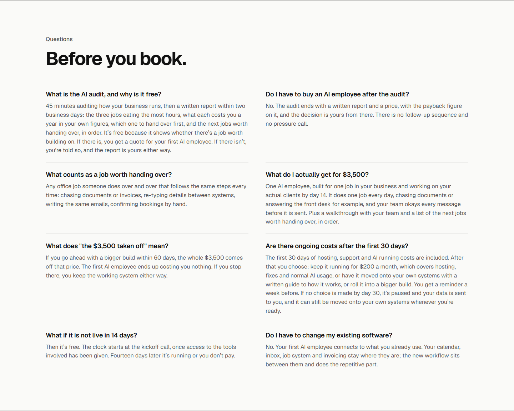
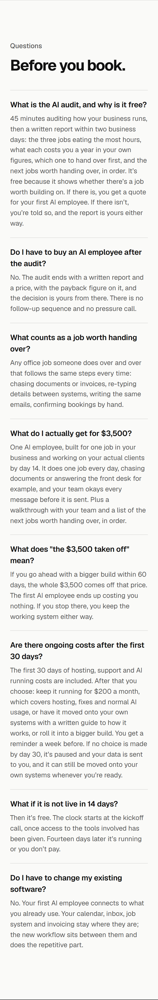
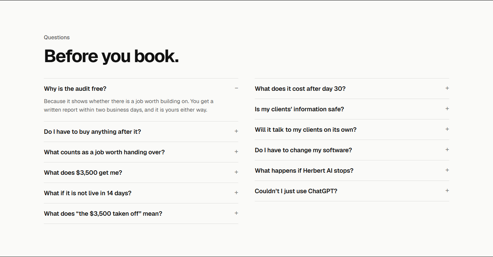
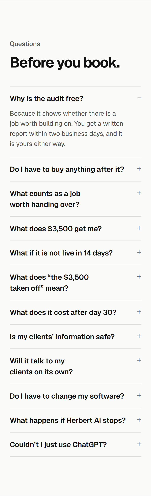
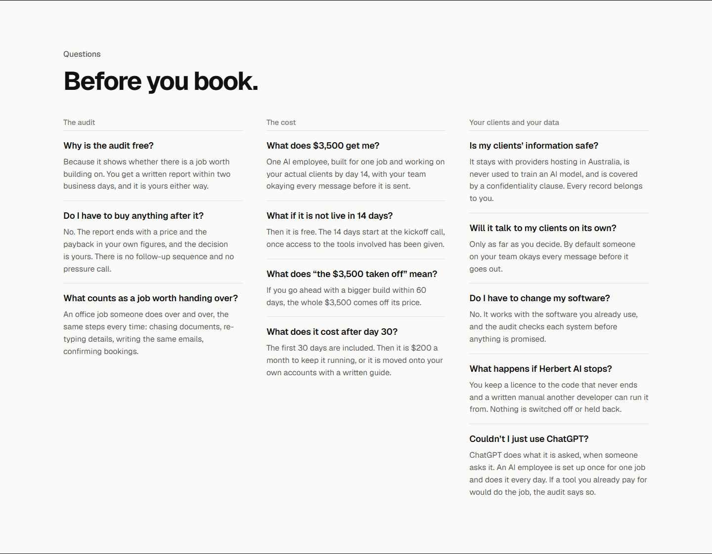
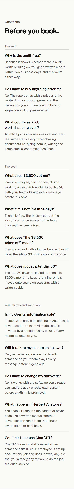
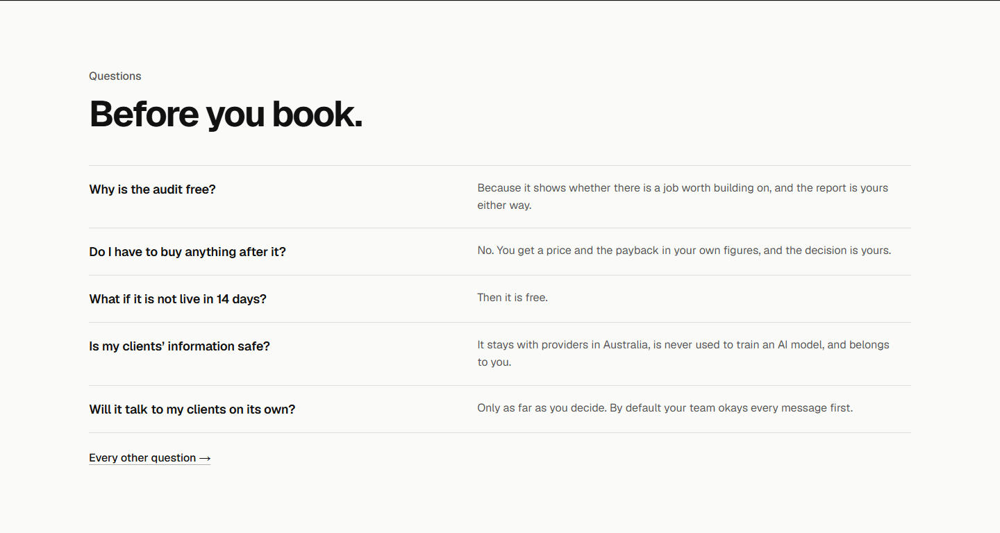
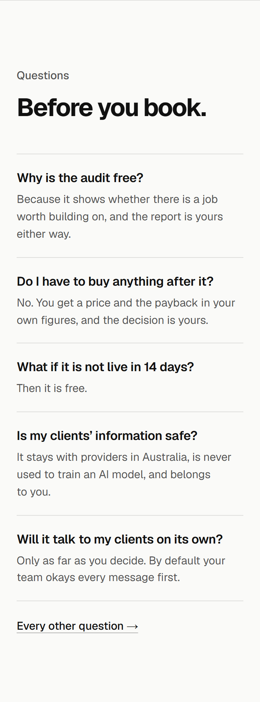

The section sits between What comes next and the link back up to the form: the last place a reader who has not booked looks for the one answer that stops them. The label and heading stay as they are in every option; words are the details pass.
| Who reaches it | An owner or office manager of a 3 to 20 person office (accountants, clinics, trades offices, property managers, venues) who has read the offer, the sample report, the timeline, the jobs and the stages, and has not booked. Most arrive from a cold email, a LinkedIn message, a referral or a door knock, and open the site to check the person and the work are real. |
| What they come with | One doubt that stops the booking. From the records: wanting a person before a commitment ("Can we catch up first?"), wanting proof ("can you send me somewhere to have a look at what you do"), price (the $25,000 floor put a clinic owner off; he never pushed back on $3,500), the risk of AI writing to their clients, their clients' data, "why can't I build it myself" (a technical owner, 29 Oct), and being pitched a problem that was only typical of the industry ("you are on the wrong track for our business"). |
| What they leave with | The one answer, then the form one link up (section 7), or a clear reason it is not for them. |
| Today | Eight questions, all open, two columns, about 700 words. All eight are about the terms; three repeat /pricing. None answers data, AI writing to clients, what happens if Herbert AI stops, or ChatGPT. |
| What bounds it | Answers match the services agreement: data with providers hosting in Australia (cl. 9), never used to train an AI model (cl. 9), every record the client's (cl. 7.1), a licence to the code that never ends (cl. 7.2), Herbert AI hosting while support runs, then moved to the client's accounts (cl. 7.4), nothing switched off or held back (cl. 8.2). The FAQPage data reads the same questions, so what is shown is what AI search reads. No client names. Not drafted: "Have you done this in my field?" The true answer in most fields is not yet, and whether the site says so is Will's call. |
A and B use all twelve. C keeps the audit's first two, the 14 days, data and talking to clients.
| Group | Question | Source |
|---|---|---|
| The audit | Why is the audit free? | Today's first question; "How do I know it saves anything?" (clinic call prep) |
| The audit | Do I have to buy anything after it? | Today; "probably need more information before I try it" (reply rules, 12 Nov) |
| The audit | What counts as a job worth handing over? | Today; "you are on the wrong track for our business" (the job is theirs to name) |
| The cost | What does $3,500 get me? | Today; /pricing asks it too |
| The cost | What if it is not live in 14 days? | Today; the guarantee is said nowhere else in the page's body |
| The cost | What does "the $3,500 taken off" mean? | Today; the phrase is section 5's |
| The cost | What does it cost after day 30? | Today, cut to the choice |
| Clients and data | Is my clients' information safe? | New. "Patient data and privacy" (clinic call prep); "customer data cannot leave Australia" (29 Oct call) |
| Clients and data | Will it talk to my clients on its own? | New here, on /faq already. "AI talking to patients is risky" (clinic call prep) |
| Clients and data | Do I have to change my software? | Today. "Cliniko and HotDoc already do this"; "works with the software they already use", never "any software" (call prep) |
| Clients and data | What happens if Herbert AI stops? | New. "You're one person" (clinic call prep); agreement cl. 7.2, 8.1, 8.2 |
| Clients and data | Couldn't I just use ChatGPT? | New. Asked on the 29 Oct call; the objection handler's site-safe answer |







